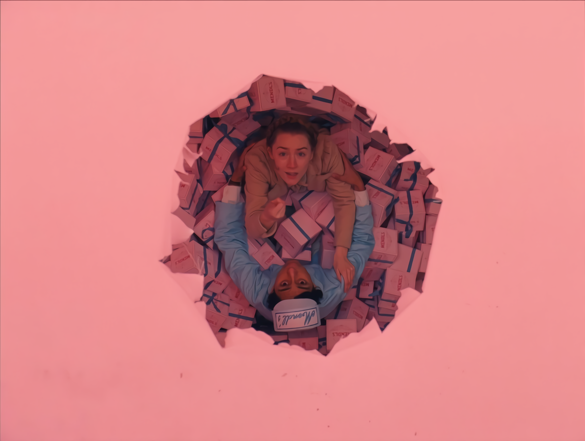

მარიამის პროექტი

ეკა კუკულავას ინტერვიუს ჩასაწერად ლობიანების ცხობის დროს მივუსწარით და კინაღამ სათქმელი
დაგვავიწყდა, ისეთი სურნელი ტრიალებდა სახლში. ოჯახში მეუღლესთან და შვილებთან ერთად დაგხვდა. ყველანი ერთად
ფუსფუსებდნენ. ზოგი შეშას უკეთებდა, ზოგი კარაქს უსვამდა ლობიანებს, ზოგი აცხობდა და ზოგიც გვართობდა. ამ
ჟრიამულში ეკას რამდენიმე კითხვა დავუსვით საოჯახო ბიზნესზე.
მათი ოჯახი ოთახებს თხუთმეტ წელზე მეტია აქირავებს და არაერთი ადამიანისთვის უმასპინძლიათ შინ რაჭული
კერძებით. სწორედ აქედან დაებადათ იდეა, გაეხსნათ საცხობი და თავიანთი მოწეული პროდუქტებით შექმნილი კერძები
შეეთავაზებინათ მომხარებლებისათვის.
ეკა, მოგვიყევით, როგორ გახსენით თქვენი საცხობი?
-დაახლოებით 2016 წელს, იმისთვის, რომ დამატებითი შემოსავალი გვქონოდა მოვიფიქრეთ საცხობი გაგვეხსნა.
ყველაფერი სასაცილოდ დავიწყეთ, თანხებიც არ გვქონდა. სახლში რაც მოგვეპოვებოდა, ძველი ხის მასალა, მე და
ჩემმა მეუღლემ დავჭერით ,,დრუჟბით“. არც კი დავხერხეთ, შუა-შუა დავჭერით და დაჭდობილს რომ ეძახინ რაჭაში,
ისეთი ქოხი გავაკეთეთ. შიგნით დავდგით სვანური “ფეჩი”, ნიჟარა, პატარა მაგიდა და ასე უცებ, ერთ კვირაში
მოფიქრებული და გაკეთებული ქოხი გავხსენით. ფეშენებულური არაა, მაგრამ სუფთად, ლამაზად და კოხტადაა
მოწყობილი. გვინდოდა, ჩვენი შვილებისთვის დამატებითი შემოსავალი ყოფილიყო და გამოვიდა, გაამართლა ნამდვილად.
მართალია, სულ თვე-ნახევარი ვმუშაობთ, სეზონზე, ივლისის 10-15-იდან აგვისტოს ბოლომდე. ყველაზე კარგ
ვარიანტში ორი თვეც ვმუშაობთ, მაგრამ იდეამ გაამართლა და კმაყოფილი მომხმარებელიც ბევრი გვყავდა. არა მარტო
ჩვენი დამსვნებელი, სოფლის ყველა დამსვენებელი, “სანსეთ შოვის” დამსვენებელიც კი ჩვენთან ყიდულობდა და
არამარტო იმ პერიოდში, აქ რომ ისვენებდნენ, როცა თბილისში მიდიოდნენ, მაშინაც გვიკვეთავდნენ და თან
მიჰქონდათ ათი-თხუთმეტი ცალი. ამასობაში, მეორე პატარა შემეძინა და ორი წლით დავკეტეთ ეს საცხობი და წელს
ისევ ვაპირებთ ამუშავებას.
ეკა, თქვენ გაქვთ საოჯახო სასტუმრო კვებით გყავთ მცირეწლოვანი შვილები და, პარალელურად, ახერხებთ
საცხობის გახსნასაც .
დიახ, დიახ, სწორედ ასეა.
წინაღობები თუ შეგექმნიათ ამ დროის განმავლობაში?
-რა თქმა უნდა, შეგვექმნა. ძირითადად ფინანსური პრობლემების გამო გადავწყვიტეთ, გაგვეხსნა საცხობიც და
სწორედ მაგიტომ ავაშენეთ სახლში რაც გვქონდა, იმ მასალებისგან. ფინანსები რომ გვქონოდა, ძალიანაც გვინდოდა,
კაპიტალურად გაგვეკეთებინა. მერე რაღაცა ორი კაპიკი შევაგროვეთ და ახლა ბლოკი და სახურავი გვაქვს ნაყიდი,
მაგრამ თანხა მაინც დაგვაკლდა. გვჭირდება კარ-ფანჯარა, ცემენტით და სხვა მასალებით მოპირკეთება. მაგის
თანხები კი ჯერ არ გვაქვს. იმედია, წელს მოვაგროვებთ ამ თანხას და კაპიტალურად ავაშენებთ, თან მინდა, შიგნით
მაღაზიაც გავაკეთო, ისე, რომ ცალკე საცხობი და ცალკე მაღაზია იყოს და, რა თქმა უნდა, ეკოლოგიურად სუფთას
ვაკეთებთ - ჩვენი ყველით, ჩვენი რძით და ლობიანსაც მხოლოდ ადგილობრივი ლობიოთი ვაცხობთ. ლორიც ადგილობრივი
გვაქვს და თუ ლობიანს ლორით გვიკვეთავენ, ჩვენივე ლორით ვაკეთებთ.
რას ისურვებდით, რომ გაგეკეთებინათ თქვენთვის ბიზნესის განსავითარებლად?
რომ მქონდეს საშუალება, მეორე და მესამე სართულს გავარემონტებდი, მეტი სტუმრის მიღება რომ შევძლო. ორჯერ
დავწერე საგრანტო პროექტი და ვერ გავიმარჯვე. მე არ მითხოვია, ვინმემ ახალი გამიკეთეთ-მეთქი, სახლი
აშენებული მაქვს, მეორე სართულისთვის მჭირდება ხის მასალა, რომელიც მთლიანად მე რომ შევიძინო, ამის საშულება
არ მაქვს.
რამდენად ხართ ინფორმირებული პროექტების, საგრანტო კონკურსებისა და სხვა საშუალებების შესახებ?
ინფორმაცია ნაკლებად ამოდის ჩვენამდე, შეიძლება რაიონში უფრო მეტად იცოდნენ და ჰქონდეთ ინფორმაცია, მაგრამ,
ყოველ შემთხვევაში, მე სამი პროექტი დავწერე. მათ შორის ერთერთში მეორე ეტაპზე გადავედით და მესამე ეტაპზე
მოგვივიდა უარი, რაც ძალიან დამთრგუნველია. განვითარების სურვილი დიდია, მაგრამ შესაძლებლობა - იმის
გათვალისწინებით, რომ კურორტთან ვართ და სეზონურად მხოლოდ ზაფხულშია დატვირთული - დაბალია. ვერც კი
გარისკავ, რომ სესხი გამოიტანო, ვაი და ცუდი ამინდი იყოს, ან რამე მოხდეს, ვეღარც გადავიხდი იმ სესხს. მე
რომ გადავწყვიტო და სესხად გამოვიტანო, 100 000 მაინც სჭირდება ჩემს სახლს. ამხელა რისკს ვერ გავწევ და
ფიზიკურადაც ვერ შევძლებ ამხელა თანხის გადახდას. ბავშვებს ისე ხომ ვერ დავტოვებ, ზამთრისთვისაც ხომ უნდა
მოვემზადოთ.
როგორც ვიცი, თქვენი ოჯახი სოკოს და ნაძვის კევს აგროვებთ.
დიახ, სოკოს ჩემი დედამთილი აგროვებს, კევს ვეღარ… აღარ შეუძლია, მაგრამ შარშან დაჩი, ჩემი ვაჟი, ჩაერთო
საოჯახო საქმეში და საკმაოდ ბევრი კევიც შეაგროვა.
ამ დროს დაჩიმ ჩაიხითხითა, მე ბიზნესმენი ვარო, გამოგვიცხადა, მცირე მეწარმეო. ინტერვიუ ცხელმა ლობიანებმა
შეგვაწყვეტინა და ცდუნებას ჩვენც ვეღარ გავუძელით. ინტერვიუ გაზაფხულზე ჩავწერეთ, მაშინ წარმოდგენაც არ
გვქონდა იმ მოსალოდნელი ტრაგედიის შესახებ, რომელიც შოვში დატრიალდა. მინდა აღვნიშნო, რომ ტრაგედიის მეორე
დღიდან ეკას ოჯახმა თავისი საცხობი შოვის მოხალისეებს ბანაკისთვის სრულიად უსასყიდლოდ დაუთმო, სახლის კარიც
ფართოდ გაუღო და გვერდიდან არ მოშორებულა ბოლო დღემდე. ეკა და მისი ოჯახი სახეა იმ კეთილი და მშრომელი
ხალხის, რომელიც სოფელ გლოლაში ცხოვრობენ და ცდილობენ, თავიანთი და ამ ქვეყნის მომავალი უფრო ნათელი
გახადონ.
ეკა კუკულავას ინტერვიუს ჩასაწერად ლობიანების ცხობის დროს მივუსწარით და კინაღამ სათქმელი
დაგვავიწყდა, ისეთი სურნელი ტრიალებდა სახლში. ოჯახში მეუღლესთან და შვილებთან ერთად დაგხვდა. ყველანი ერთად
ფუსფუსებდნენ. ზოგი შეშას უკეთებდა, ზოგი კარაქს უსვამდა ლობიანებს, ზოგი აცხობდა და ზოგიც გვართობდა. ამ
ჟრიამულში ეკას რამდენიმე კითხვა დავუსვით საოჯახო ბიზნესზე.
მათი ოჯახი ოთახებს თხუთმეტ წელზე მეტია აქირავებს და არაერთი ადამიანისთვის უმასპინძლიათ შინ რაჭული
კერძებით. სწორედ აქედან დაებადათ იდეა, გაეხსნათ საცხობი და თავიანთი მოწეული პროდუქტებით შექმნილი კერძები
შეეთავაზებინათ მომხარებლებისათვის.
ეკა, მოგვიყევით, როგორ გახსენით თქვენი საცხობი?
-დაახლოებით 2016 წელს, იმისთვის, რომ დამატებითი შემოსავალი გვქონოდა მოვიფიქრეთ საცხობი გაგვეხსნა.
ყველაფერი სასაცილოდ დავიწყეთ, თანხებიც არ გვქონდა. სახლში რაც მოგვეპოვებოდა, ძველი ხის მასალა, მე და
ჩემმა მეუღლემ დავჭერით ,,დრუჟბით“. არც კი დავხერხეთ, შუა-შუა დავჭერით და დაჭდობილს რომ ეძახინ რაჭაში,
ისეთი ქოხი გავაკეთეთ. შიგნით დავდგით სვანური “ფეჩი”, ნიჟარა, პატარა მაგიდა და ასე უცებ, ერთ კვირაში
მოფიქრებული და გაკეთებული ქოხი გავხსენით. ფეშენებულური არაა, მაგრამ სუფთად, ლამაზად და კოხტადაა
მოწყობილი. გვინდოდა, ჩვენი შვილებისთვის დამატებითი შემოსავალი ყოფილიყო და გამოვიდა, გაამართლა ნამდვილად.
მართალია, სულ თვე-ნახევარი ვმუშაობთ, სეზონზე, ივლისის 10-15-იდან აგვისტოს ბოლომდე. ყველაზე კარგ
ვარიანტში ორი თვეც ვმუშაობთ, მაგრამ იდეამ გაამართლა და კმაყოფილი მომხმარებელიც ბევრი გვყავდა. არა მარტო
ჩვენი დამსვნებელი, სოფლის ყველა დამსვენებელი, “სანსეთ შოვის” დამსვენებელიც კი ჩვენთან ყიდულობდა და
არამარტო იმ პერიოდში, აქ რომ ისვენებდნენ, როცა თბილისში მიდიოდნენ, მაშინაც გვიკვეთავდნენ და თან
მიჰქონდათ ათი-თხუთმეტი ცალი. ამასობაში, მეორე პატარა შემეძინა და ორი წლით დავკეტეთ ეს საცხობი და წელს
ისევ ვაპირებთ ამუშავებას.